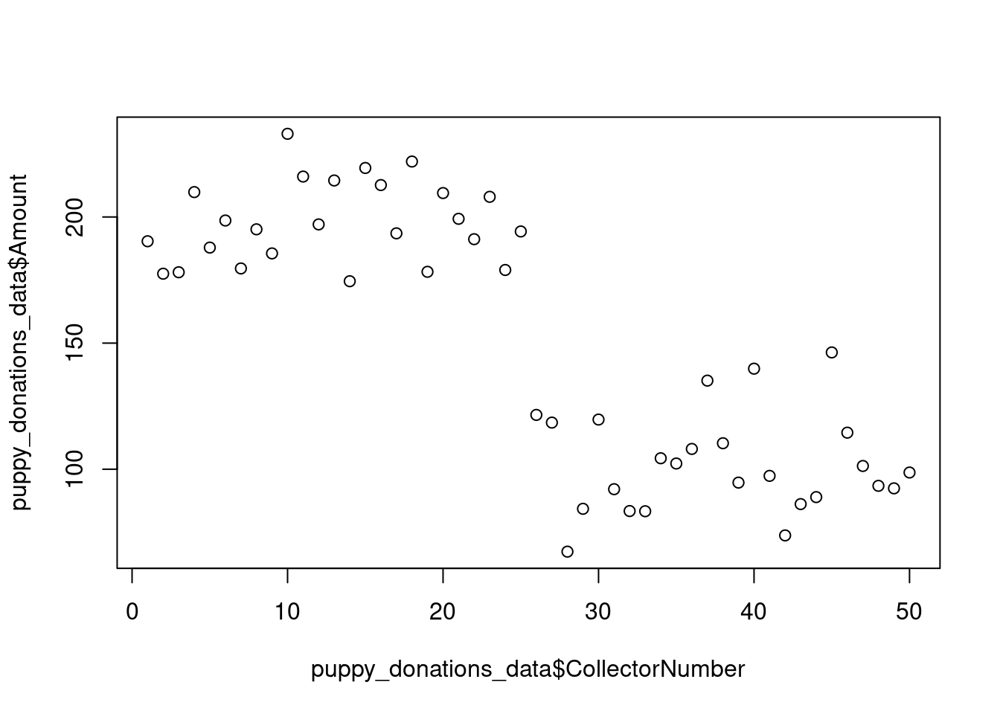
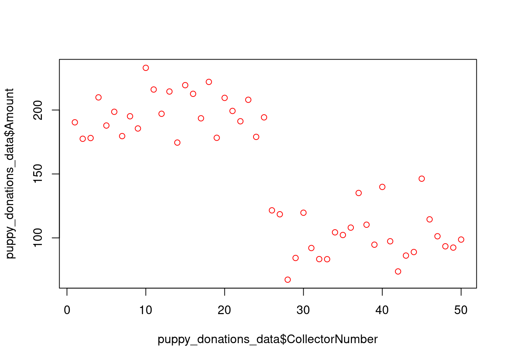
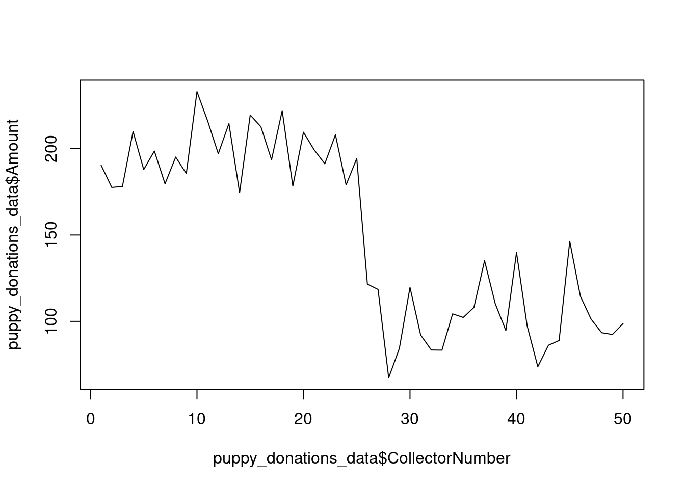
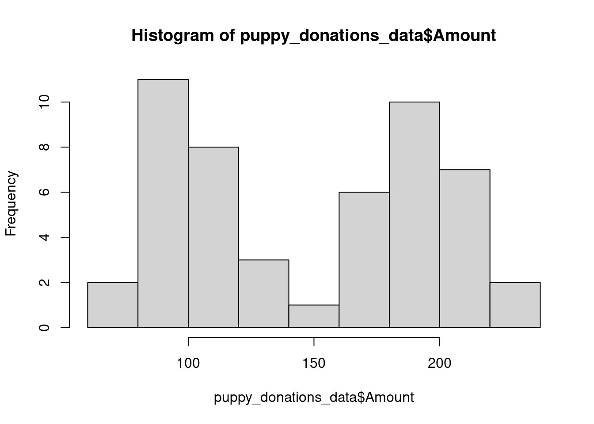

Data Focus
Modules and Handouts 2–6 cover topics that are part of the data
analysis journey and are all interrelated to one another. The way that
it has been separated is to introduce main topic but then each
subsequent topic will add in additional content for previous topics.
E.g. we start with data visualisation to introduce the basics of the
plotting systems but then each other handout will include extra options
and customisations.
Handout: Handout 02 - Visualising
Data
Associated Readings:
Tidy data principles
Before we delve we bring data into R and start to visualise it. We
first need to learn about how computers like data to be structured.
It’s very common to collect data using a spreadsheet, so here are
some principles for setting up your spreadsheet:
- Make it rectangular
- Columns are variables
- Rows are observations
- One piece of information per cell
Think about how you are dealing with missing data.
In general we would recommend saving your data in the “comma
separated values” (csv) format. This is a format where all your data is
in plain text (you can view it in a text editor) and it is highly
portable between different languages/programs.
Downloading data
download.file(url = "https://raw.githubusercontent.com/rtis-training/2022-s1-r4ssp/main/data/r4ssp_donations_data.csv", destfile = "data/r4ssp_donations_data.csv")
Read data in from csv
There are two main approaches to reading data into R.
- Data imported (point and click)
- Code
Both methods provide either a Base R option or a Tidyverse
(readr) option.
Data Importer
The first approach is a point-and-click method, using the data
importer found in the environment panel. This can be useful to get a
preview of how your data is going to be read in. Once you have imported
your data, make sure to keep the code that was generated and can
subsequently be used as the second approach
Code
Using code there are two main functions that are used for reading in
csv data. read.csv from Base R and read_csv
from readr (as part of the Tidyverse). They have minor
differences in how they operate, the main difference being that prior to
R v4, read.csv would by default load character type data in
as Factors.
Tidyverse and Base R
So far the syntax and methods you have been introduced to have been
entirely part of what is known as “Base R” i.e. it’s all available right
out of the box. There’s an ecosystem of extremely popular additional
packages created by most prominently by Hadley Wickham (and others) that
follow a similar (opinionated) design principle that is primarily
focused on (tidy) data analysis - the Tidyverse. The Tidyverse is a
collection of packages that we will make heavy use of during this course
but such as readr for reading data, ggplot2
for plotting, and dplyr and tidyr for data
manipulations.
the tidyverse “metapackage” provides a convenient way to
both install and load the core packages that form the tidyverse, but you
may choose to load only the exact packages you wish to use.
install.packages("tidyverse")
library(tidyverse)
We believe that it’s important to show you how to use both Base R and
the Tidyverse because together they will give you a very powerful set of
tools to tackle your data analysis and understand other code you come
across.
Base R
# common options for running read.csv
my_data <- read.csv(file = "myfile.csv", header = TRUE , stringsAsFactors = FALSE)
stringsAsFactors=FALSE
Factors are a datatype that is used within R for coding categorical
data. For R versions < 4, the default for read.csv was
to bring in character data as a Factor
(i.e. stringsAsFactors=TRUE), to prevent this and have the
data be read in as character type it is common to see the argument
stringsAsFactors=FALSE. From R v4 and up, the default
option was changed to be stringsAsFactors=FALSE.
Tidyverse
The package from the tidyverse the deals with reading in data is
readr. If you have already run
library(tidyverse) it will automatically have been loaded
for you. If you aren’t making use of the other Tidyverse packages if can
be a good idea load only readr:
library(readr).
# common options for running read_csv
read_csv(file = "my_file.csv", col_names = TRUE)
read_csv will display an output describing the data load
process. This output can be an extremely useful first check if you data
has loaded in how you wanted it to and is worth checking that columns
are of the correct data type.
Previewing data
Once your data is loaded, it’s worth checking to make sure that
everything is as you expect, as this is usually the largest source of
errors once you get to analysis.
Viewing
These functions give different ways of viewing your data
Checking
These functions provide ways of checking the size and type of data
that has been read in.
Size:
Type:
The largest source (anecdotal) of analysis errors is either numeric
data coming in as characters - which could be caused by something unseen
like a ‘blank cell’ in Excel that actually contained a space.
Sanity:
summary
Data visualisation
There are two main methods for plotting data in R. The first is the
in-built plotting functions within base R. The second is using a popular
package called ggplot2.
Here we’ll introduce you to both systems to create some simple plots.
In future modules we’ll cover more about plotting.
Base R
Scatter plots
Scatter plots are a straight forward way to get a look at our
data
plot(puppy_donations_data$CollectorNumber, puppy_donations_data$Amount)

And once more with colour!
plot(puppy_donations_data$CollectorNumber, puppy_donations_data$Amount, col = "red")

Line plots
plot(puppy_donations_data$CollectorNumber, puppy_donations_data$Amount, type = 'l')

Histograms
hist(puppy_donations_data$Amount)
 ####
Boxplots
Remember that this data has a condition under which the data was
collected - with and without a puppy. Boxplots provide a way to get an
understanding of our data using categorical information.
The R function boxplot accepts two arguments.
The first argument is the formula. This is a
complex, yet very common, argument format for R statistical functions.
The formula describes a linear model for a data set with the general
structure: dependent or predicted variable ~ independent
variables or predictors, using columns names from the data
frame. The ~ (tilde) is read as “depends on” or “is predicted by”. For
our example, we are interested in the way that Amount is dependent on
the Puppy/Alone condition, so we specify our formula as Amount ~
Condition. We will see more complex examples of the formula
argument later in the semester.
The second argument to boxplot is the data frame.
boxplot(Amount ~ Condition, puppy_donations_data)

Customising
There are a multitude of customisations that can be done to plots
such as titles, labels, colours, etc.
A fantastic resource for looking at how to customise your plots made
using the Base R plotting system is the R Graphics Cookbook.
Tidyverse
The ggplot2 package is a popular data visualisation package for R. In
order to use it we need to first load it into R.
library(ggplot2)
Ggplot tackles plotting reducing it into three components
- what is the data
- how the data is mapped to aesthetics (aes)
- how the data is represented geometrically (geom)
So to create a plot using ggplot we need to specify these three
components.
Plots can then be made incrementally by adding on additional
layers.
Creating a plot
ggplot(data = mtcars, aes(x = mpg, y = wt)) + geom_point()

Excercises
Using the Base R scatter plot of the puppies data, customise the
label, title, and colour. help("plot") may offer some
assistance.
Modify the Base R histogram to be a different colour.
LS0tCnRpdGxlOiAiSGFuZG91dCAwMi0gVmlzdWFsaXNpbmcgRGF0YSIKZGF0ZTogIlNlbWVzdGVyIDEsIDIwMjIiCm91dHB1dDoKICBodG1sX2RvY3VtZW50OgogICAgdG9jOiB0cnVlCiAgICB0b2NfZmxvYXQ6IHRydWUKICAgIHRvY19kZXB0aDogMwogICAgY29kZV9kb3dubG9hZDogdHJ1ZQogICAgY29kZV9mb2xkaW5nOiBzaG93Ci0tLQoKYGBge3Igc2V0dXAsIGluY2x1ZGU9RkFMU0V9CmxpYnJhcnkoa25pdHIpCgprbml0cjo6b3B0c19jaHVuayRzZXQoCiAgY29tbWVudCA9ICIjPiIsCiAgZmlnLnBhdGggPSAiZmlndXJlcy8iLCAjIHVzZSBvbmx5IGZvciBzaW5nbGUgUm1kIGZpbGVzCiAgY29sbGFwc2UgPSBUUlVFLAogIGVjaG8gPSBUUlVFCikKYGBgCgoKCj4gIyMjIyBEYXRhIEZvY3VzCj4KPiBNb2R1bGVzIGFuZCBIYW5kb3V0cyAyLS02IGNvdmVyIHRvcGljcyB0aGF0IGFyZSBwYXJ0IG9mIHRoZSBkYXRhIGFuYWx5c2lzIGpvdXJuZXkgYW5kIGFyZSBhbGwgaW50ZXJyZWxhdGVkIHRvIG9uZSBhbm90aGVyLiBUaGUgd2F5IHRoYXQgaXQgaGFzIGJlZW4gc2VwYXJhdGVkIGlzIHRvIGludHJvZHVjZSBtYWluIHRvcGljIGJ1dCB0aGVuIGVhY2ggc3Vic2VxdWVudCB0b3BpYyB3aWxsIGFkZCBpbiBhZGRpdGlvbmFsIGNvbnRlbnQgZm9yIHByZXZpb3VzIHRvcGljcy4gRS5nLiB3ZSBzdGFydCB3aXRoIGRhdGEgdmlzdWFsaXNhdGlvbiB0byBpbnRyb2R1Y2UgdGhlIGJhc2ljcyBvZiB0aGUgcGxvdHRpbmcgc3lzdGVtcyBidXQgdGhlbiBlYWNoIG90aGVyIGhhbmRvdXQgd2lsbCBpbmNsdWRlIGV4dHJhIG9wdGlvbnMgYW5kIGN1c3RvbWlzYXRpb25zLgogClwKClwKIAogCkhhbmRvdXQ6IFtIYW5kb3V0IDAyIC0gVmlzdWFsaXNpbmcgRGF0YV0oaGFuZG91dDIuaHRtbCkKCkFzc29jaWF0ZWQgUmVhZGluZ3M6CgotIFtSIGZvciBEYXRhIFNjaWVuY2UgLSBDaGFwdGVyIDEyXShodHRwczovL3I0ZHMuaGFkLmNvLm56L3RpZHktZGF0YS5odG1sKQotIFtSIGZvciBEYXRhIFNjaWVuY2UgLSBDaGFwdGVyIDExXShodHRwczovL3I0ZHMuaGFkLmNvLm56L2RhdGEtaW1wb3J0Lmh0bWwpCi0gW1IgZm9yIERhdGEgU2NpZW5jZSAtIENoYXB0ZXIgM10oaHR0cHM6Ly9yNGRzLmhhZC5jby5uei9kYXRhLXZpc3VhbGlzYXRpb24uaHRtbCkKCgogCiMjIFRpZHkgZGF0YSBwcmluY2lwbGVzCgpCZWZvcmUgd2UgZGVsdmUgd2UgYnJpbmcgZGF0YSBpbnRvIFIgYW5kIHN0YXJ0IHRvIHZpc3VhbGlzZSBpdC4gV2UgZmlyc3QgbmVlZCB0byBsZWFybiBhYm91dCBob3cgY29tcHV0ZXJzIGxpa2UgZGF0YSB0byBiZSBzdHJ1Y3R1cmVkLgoKSXQncyB2ZXJ5IGNvbW1vbiB0byBjb2xsZWN0IGRhdGEgdXNpbmcgYSBzcHJlYWRzaGVldCwgc28gaGVyZSBhcmUgc29tZSBwcmluY2lwbGVzIGZvciBzZXR0aW5nIHVwIHlvdXIgc3ByZWFkc2hlZXQ6CgoxLiBNYWtlIGl0IHJlY3Rhbmd1bGFyCjIuIENvbHVtbnMgYXJlIHZhcmlhYmxlcwozLiBSb3dzIGFyZSBvYnNlcnZhdGlvbnMKNC4gT25lIHBpZWNlIG9mIGluZm9ybWF0aW9uIHBlciBjZWxsCgpUaGluayBhYm91dCBob3cgeW91IGFyZSBkZWFsaW5nIHdpdGggbWlzc2luZyBkYXRhLgoKSW4gZ2VuZXJhbCB3ZSB3b3VsZCByZWNvbW1lbmQgc2F2aW5nIHlvdXIgZGF0YSBpbiB0aGUgImNvbW1hIHNlcGFyYXRlZCB2YWx1ZXMiIChjc3YpIGZvcm1hdC4gVGhpcyBpcyBhIGZvcm1hdCB3aGVyZSBhbGwgeW91ciBkYXRhIGlzIGluIHBsYWluIHRleHQgKHlvdSBjYW4gdmlldyBpdCBpbiBhIHRleHQgZWRpdG9yKSBhbmQgaXQgaXMgaGlnaGx5IHBvcnRhYmxlIGJldHdlZW4gZGlmZmVyZW50IGxhbmd1YWdlcy9wcm9ncmFtcy4KCgojIyMgRG93bmxvYWRpbmcgZGF0YQoKYGBge3IsIGV2YWw9RkFMU0V9CmRvd25sb2FkLmZpbGUodXJsID0gImh0dHBzOi8vcmF3LmdpdGh1YnVzZXJjb250ZW50LmNvbS9ydGlzLXRyYWluaW5nLzIwMjItczEtcjRzc3AvbWFpbi9kYXRhL3I0c3NwX2RvbmF0aW9uc19kYXRhLmNzdiIsIGRlc3RmaWxlID0gImRhdGEvcjRzc3BfZG9uYXRpb25zX2RhdGEuY3N2IikKYGBgCgoKCiMjIFJlYWQgZGF0YSBpbiBmcm9tIGNzdgoKVGhlcmUgYXJlIHR3byBtYWluIGFwcHJvYWNoZXMgdG8gcmVhZGluZyBkYXRhIGludG8gUi4KCi0gRGF0YSBpbXBvcnRlZCAocG9pbnQgYW5kIGNsaWNrKQotIENvZGUKCkJvdGggbWV0aG9kcyBwcm92aWRlIGVpdGhlciBhIEJhc2UgUiBvcHRpb24gb3IgYSBUaWR5dmVyc2UgKGByZWFkcmApIG9wdGlvbi4KCgoqKkRhdGEgSW1wb3J0ZXIqKgoKVGhlIGZpcnN0IGFwcHJvYWNoIGlzIGEgcG9pbnQtYW5kLWNsaWNrIG1ldGhvZCwgdXNpbmcgdGhlIGRhdGEgaW1wb3J0ZXIgZm91bmQgaW4gdGhlIGVudmlyb25tZW50IHBhbmVsLiBUaGlzIGNhbiBiZSB1c2VmdWwgdG8gZ2V0IGEgcHJldmlldyBvZiBob3cgeW91ciBkYXRhIGlzIGdvaW5nIHRvIGJlIHJlYWQgaW4uIE9uY2UgeW91IGhhdmUgaW1wb3J0ZWQgeW91ciBkYXRhLCBtYWtlIHN1cmUgdG8ga2VlcCB0aGUgY29kZSB0aGF0IHdhcyBnZW5lcmF0ZWQgYW5kIGNhbiBzdWJzZXF1ZW50bHkgYmUgdXNlZCBhcyB0aGUgc2Vjb25kIGFwcHJvYWNoCgoKKipDb2RlKioKClVzaW5nIGNvZGUgdGhlcmUgYXJlIHR3byBtYWluIGZ1bmN0aW9ucyB0aGF0IGFyZSB1c2VkIGZvciByZWFkaW5nIGluIGNzdiBkYXRhLiBgcmVhZC5jc3ZgIGZyb20gQmFzZSBSIGFuZCBgcmVhZF9jc3ZgIGZyb20gYHJlYWRyYCAoYXMgcGFydCBvZiB0aGUgVGlkeXZlcnNlKS4gVGhleSBoYXZlIG1pbm9yIGRpZmZlcmVuY2VzIGluIGhvdyB0aGV5IG9wZXJhdGUsIHRoZSBtYWluIGRpZmZlcmVuY2UgYmVpbmcgdGhhdCBwcmlvciB0byBSIHY0LCBgcmVhZC5jc3ZgIHdvdWxkIGJ5IGRlZmF1bHQgbG9hZCBjaGFyYWN0ZXIgdHlwZSBkYXRhIGluIGFzIF9GYWN0b3JzXy4KCj4gIyMjIFRpZHl2ZXJzZSBhbmQgQmFzZSBSCj4gCj4gU28gZmFyIHRoZSBzeW50YXggYW5kIG1ldGhvZHMgeW91IGhhdmUgYmVlbiBpbnRyb2R1Y2VkIHRvIGhhdmUgYmVlbiBlbnRpcmVseSBwYXJ0IG9mIHdoYXQgaXMga25vd24gYXMgIkJhc2UgUiIgaS5lLiBpdCdzIGFsbCBhdmFpbGFibGUgcmlnaHQgb3V0IG9mIHRoZSBib3guIFRoZXJlJ3MgYW4gZWNvc3lzdGVtIG9mIGV4dHJlbWVseSBwb3B1bGFyIGFkZGl0aW9uYWwgcGFja2FnZXMgY3JlYXRlZCBieSBtb3N0IHByb21pbmVudGx5IGJ5IEhhZGxleSBXaWNraGFtIChhbmQgb3RoZXJzKSB0aGF0IGZvbGxvdyBhIHNpbWlsYXIgKG9waW5pb25hdGVkKSBkZXNpZ24gcHJpbmNpcGxlIHRoYXQgaXMgcHJpbWFyaWx5IGZvY3VzZWQgb24gKHRpZHkpIGRhdGEgYW5hbHlzaXMgLSB0aGUgVGlkeXZlcnNlLiBUaGUgVGlkeXZlcnNlIGlzIGEgY29sbGVjdGlvbiBvZiBwYWNrYWdlcyB0aGF0IHdlIHdpbGwgbWFrZSBoZWF2eSB1c2Ugb2YgZHVyaW5nIHRoaXMgY291cnNlIGJ1dCBzdWNoIGFzIGByZWFkcmAgZm9yIHJlYWRpbmcgZGF0YSwgYGdncGxvdDJgIGZvciBwbG90dGluZywgYW5kIGBkcGx5cmAgYW5kIGB0aWR5cmAgZm9yIGRhdGEgbWFuaXB1bGF0aW9ucy4KPgo+IHRoZSBgdGlkeXZlcnNlYCAibWV0YXBhY2thZ2UiIHByb3ZpZGVzIGEgY29udmVuaWVudCB3YXkgdG8gYm90aCBpbnN0YWxsIGFuZCBsb2FkIHRoZSBjb3JlIHBhY2thZ2VzIHRoYXQgZm9ybSB0aGUgdGlkeXZlcnNlLCBidXQgeW91IG1heSBjaG9vc2UgdG8gbG9hZCBvbmx5IHRoZSBleGFjdCBwYWNrYWdlcyB5b3Ugd2lzaCB0byB1c2UuCj4gCj4gYGBge3IsIGV2YWwgPSBGQUxTRX0KPiBpbnN0YWxsLnBhY2thZ2VzKCJ0aWR5dmVyc2UiKQo+IAo+IGxpYnJhcnkodGlkeXZlcnNlKQo+IGBgYAo+Cj4gV2UgYmVsaWV2ZSB0aGF0IGl0J3MgaW1wb3J0YW50IHRvIHNob3cgeW91IGhvdyB0byB1c2UgYm90aCBCYXNlIFIgYW5kIHRoZSBUaWR5dmVyc2UgYmVjYXVzZSB0b2dldGhlciB0aGV5IHdpbGwgZ2l2ZSB5b3UgYSB2ZXJ5IHBvd2VyZnVsIHNldCBvZiB0b29scyB0byB0YWNrbGUgeW91ciBkYXRhIGFuYWx5c2lzIGFuZCB1bmRlcnN0YW5kIG90aGVyIGNvZGUgeW91IGNvbWUgYWNyb3NzLgoKCi0tLS0KICAKIyMjIEJhc2UgUgoKYGBge3IsIGV2YWw9RkFMU0V9CiMgY29tbW9uIG9wdGlvbnMgZm9yIHJ1bm5pbmcgcmVhZC5jc3YKbXlfZGF0YSA8LSByZWFkLmNzdihmaWxlID0gIm15ZmlsZS5jc3YiLCBoZWFkZXIgPSBUUlVFICwgc3RyaW5nc0FzRmFjdG9ycyA9IEZBTFNFKQpgYGAKCj4gYHN0cmluZ3NBc0ZhY3RvcnM9RkFMU0VgCj4KPiBGYWN0b3JzIGFyZSBhIGRhdGF0eXBlIHRoYXQgaXMgdXNlZCB3aXRoaW4gUiBmb3IgY29kaW5nIGNhdGVnb3JpY2FsIGRhdGEuIEZvciBSIHZlcnNpb25zIDwgNCwgdGhlIGRlZmF1bHQgZm9yIGByZWFkLmNzdmAgd2FzIHRvIGJyaW5nIGluIGNoYXJhY3RlciBkYXRhIGFzIGEgRmFjdG9yIChpLmUuIGBzdHJpbmdzQXNGYWN0b3JzPVRSVUVgKSwgdG8gcHJldmVudCB0aGlzIGFuZCBoYXZlIHRoZSBkYXRhIGJlIHJlYWQgaW4gYXMgY2hhcmFjdGVyIHR5cGUgaXQgaXMgY29tbW9uIHRvIHNlZSB0aGUgYXJndW1lbnQgYHN0cmluZ3NBc0ZhY3RvcnM9RkFMU0VgLiBGcm9tIFIgdjQgYW5kIHVwLCB0aGUgX2RlZmF1bHQgb3B0aW9uIHdhcyBjaGFuZ2VkXyB0byBiZSBgc3RyaW5nc0FzRmFjdG9ycz1GQUxTRWAuCgotLS0tCgojIyMgVGlkeXZlcnNlCgpUaGUgcGFja2FnZSBmcm9tIHRoZSB0aWR5dmVyc2UgdGhlIGRlYWxzIHdpdGggcmVhZGluZyBpbiBkYXRhIGlzIGByZWFkcmAuIElmIHlvdSBoYXZlIGFscmVhZHkgcnVuIGBsaWJyYXJ5KHRpZHl2ZXJzZSlgIGl0IHdpbGwgYXV0b21hdGljYWxseSBoYXZlIGJlZW4gbG9hZGVkIGZvciB5b3UuIElmIHlvdSBhcmVuJ3QgbWFraW5nIHVzZSBvZiB0aGUgb3RoZXIgVGlkeXZlcnNlIHBhY2thZ2VzIGlmIGNhbiBiZSBhIGdvb2QgaWRlYSBsb2FkIG9ubHkgYHJlYWRyYDogYGxpYnJhcnkocmVhZHIpYC4KCmBgYHtyLCBldmFsPUZBTFNFfQojIGNvbW1vbiBvcHRpb25zIGZvciBydW5uaW5nIHJlYWRfY3N2CnJlYWRfY3N2KGZpbGUgPSAibXlfZmlsZS5jc3YiLCBjb2xfbmFtZXMgPSBUUlVFKQpgYGAKCmByZWFkX2NzdmAgd2lsbCBkaXNwbGF5IGFuIG91dHB1dCBkZXNjcmliaW5nIHRoZSBkYXRhIGxvYWQgcHJvY2Vzcy4gVGhpcyBvdXRwdXQgY2FuIGJlIGFuIGV4dHJlbWVseSB1c2VmdWwgZmlyc3QgY2hlY2sgaWYgeW91IGRhdGEgaGFzIGxvYWRlZCBpbiBob3cgeW91IHdhbnRlZCBpdCB0byBhbmQgaXMgd29ydGggY2hlY2tpbmcgdGhhdCBjb2x1bW5zIGFyZSBvZiB0aGUgY29ycmVjdCBkYXRhIHR5cGUuCgotLS0tCgojIyBQcmV2aWV3aW5nIGRhdGEKCk9uY2UgeW91ciBkYXRhIGlzIGxvYWRlZCwgaXQncyB3b3J0aCBjaGVja2luZyB0byBtYWtlIHN1cmUgdGhhdCBldmVyeXRoaW5nIGlzIGFzIHlvdSBleHBlY3QsIGFzIHRoaXMgaXMgdXN1YWxseSB0aGUgbGFyZ2VzdCBzb3VyY2Ugb2YgZXJyb3JzIG9uY2UgeW91IGdldCB0byBhbmFseXNpcy4KCgojIyMgVmlld2luZwoKVGhlc2UgZnVuY3Rpb25zIGdpdmUgZGlmZmVyZW50IHdheXMgb2Ygdmlld2luZyB5b3VyIGRhdGEKCi0gYFZpZXdgCi0gYGhlYWRgCi0gYHRhaWxgCgojIyMgQ2hlY2tpbmcKCgpUaGVzZSBmdW5jdGlvbnMgcHJvdmlkZSB3YXlzIG9mIGNoZWNraW5nIHRoZSBzaXplIGFuZCB0eXBlIG9mIGRhdGEgdGhhdCBoYXMgYmVlbiByZWFkIGluLgoKU2l6ZToKCi0gYGRpbWAKLSBgbnJvd2AKLSBgbmNvbGAKClR5cGU6CgotIGBjbGFzc2AKLSBgbmFtZXNgCi0gYHN0cmAKClRoZSBsYXJnZXN0IHNvdXJjZSAoYW5lY2RvdGFsKSBvZiBhbmFseXNpcyBlcnJvcnMgaXMgZWl0aGVyIG51bWVyaWMgZGF0YSBjb21pbmcgaW4gYXMgY2hhcmFjdGVycyAtIHdoaWNoIGNvdWxkIGJlIGNhdXNlZCBieSBzb21ldGhpbmcgdW5zZWVuIGxpa2UgYSAnYmxhbmsgY2VsbCcgaW4gRXhjZWwgdGhhdCBhY3R1YWxseSBjb250YWluZWQgYSBzcGFjZS4KClNhbml0eToKCmBzdW1tYXJ5YAoKIyMgRGF0YSB2aXN1YWxpc2F0aW9uIHsudGFic2V0fQoKVGhlcmUgYXJlIHR3byBtYWluIG1ldGhvZHMgZm9yIHBsb3R0aW5nIGRhdGEgaW4gUi4gVGhlIGZpcnN0IGlzIHRoZSBpbi1idWlsdCBwbG90dGluZyBmdW5jdGlvbnMgd2l0aGluIGJhc2UgUi4gVGhlIHNlY29uZCBpcyB1c2luZyBhIHBvcHVsYXIgcGFja2FnZSBjYWxsZWQgYGdncGxvdDJgLgoKSGVyZSB3ZSdsbCBpbnRyb2R1Y2UgeW91IHRvIGJvdGggc3lzdGVtcyB0byBjcmVhdGUgc29tZSBzaW1wbGUgcGxvdHMuIEluIGZ1dHVyZSBtb2R1bGVzIHdlJ2xsIGNvdmVyIG1vcmUgYWJvdXQgcGxvdHRpbmcuCgojIyMgQmFzZSBSIAoKIyMjIyBTY2F0dGVyIHBsb3RzCgpTY2F0dGVyIHBsb3RzIGFyZSBhIHN0cmFpZ2h0IGZvcndhcmQgd2F5IHRvIGdldCBhIGxvb2sgYXQgb3VyIGRhdGEKCmBgYHtyIGhhbmRvdXQyX3NjYXR0ZXJ9CnBsb3QocHVwcHlfZG9uYXRpb25zX2RhdGEkQ29sbGVjdG9yTnVtYmVyLCBwdXBweV9kb25hdGlvbnNfZGF0YSRBbW91bnQpCmBgYAoKQW5kIG9uY2UgbW9yZSB3aXRoIGNvbG91ciEKCmBgYHtyIGhhbmRvdXQyX3JlZF9zY2F0dGVyfQpwbG90KHB1cHB5X2RvbmF0aW9uc19kYXRhJENvbGxlY3Rvck51bWJlciwgcHVwcHlfZG9uYXRpb25zX2RhdGEkQW1vdW50LCBjb2wgPSAicmVkIikKYGBgCgoKIyMjIyBMaW5lIHBsb3RzCgpgYGB7ciBoYW5kb3V0Ml9saW5lcGxvdH0KcGxvdChwdXBweV9kb25hdGlvbnNfZGF0YSRDb2xsZWN0b3JOdW1iZXIsIHB1cHB5X2RvbmF0aW9uc19kYXRhJEFtb3VudCwgdHlwZSA9ICdsJykKYGBgCgoKIyMjIyBIaXN0b2dyYW1zCgoKYGBge3IgaGFuZG91dDJfaGlzdH0KaGlzdChwdXBweV9kb25hdGlvbnNfZGF0YSRBbW91bnQpCmBgYAojIyMjIEJveHBsb3RzCgpSZW1lbWJlciB0aGF0IHRoaXMgZGF0YSBoYXMgYSBjb25kaXRpb24gdW5kZXIgd2hpY2ggdGhlIGRhdGEgd2FzIGNvbGxlY3RlZCAtIHdpdGggYW5kIHdpdGhvdXQgYSBwdXBweS4gQm94cGxvdHMgcHJvdmlkZSBhIHdheSB0byBnZXQgYW4gdW5kZXJzdGFuZGluZyBvZiBvdXIgZGF0YSB1c2luZyBjYXRlZ29yaWNhbCBpbmZvcm1hdGlvbi4KClRoZSBSIGZ1bmN0aW9uIGBib3hwbG90YCBhY2NlcHRzIHR3byBhcmd1bWVudHMuIAoKVGhlIGZpcnN0IGFyZ3VtZW50IGlzIHRoZSAqKmZvcm11bGEqKi4gVGhpcyBpcyBhIGNvbXBsZXgsIHlldCB2ZXJ5IGNvbW1vbiwgYXJndW1lbnQgZm9ybWF0IGZvciBSIHN0YXRpc3RpY2FsIGZ1bmN0aW9ucy4gVGhlIGZvcm11bGEgZGVzY3JpYmVzIGEgbGluZWFyIG1vZGVsIGZvciBhIGRhdGEgc2V0IHdpdGggdGhlIGdlbmVyYWwgc3RydWN0dXJlOiAqKmRlcGVuZGVudCBvciBwcmVkaWN0ZWQgdmFyaWFibGUgfiBpbmRlcGVuZGVudCB2YXJpYWJsZXMgb3IgcHJlZGljdG9ycyoqLCB1c2luZyBjb2x1bW5zIG5hbWVzIGZyb20gdGhlIGRhdGEgZnJhbWUuIFRoZSB+ICh0aWxkZSkgaXMgcmVhZCBhcyAiZGVwZW5kcyBvbiIgb3IgImlzIHByZWRpY3RlZCBieSIuIEZvciBvdXIgZXhhbXBsZSwgd2UgYXJlIGludGVyZXN0ZWQgaW4gdGhlIHdheSB0aGF0IEFtb3VudCBpcyBkZXBlbmRlbnQgb24gdGhlIFB1cHB5L0Fsb25lIGNvbmRpdGlvbiwgc28gd2Ugc3BlY2lmeSBvdXIgZm9ybXVsYSBhcyAqKkFtb3VudCB+IENvbmRpdGlvbioqLiAgV2Ugd2lsbCBzZWUgbW9yZSBjb21wbGV4IGV4YW1wbGVzIG9mIHRoZSBmb3JtdWxhIGFyZ3VtZW50IGxhdGVyIGluIHRoZSBzZW1lc3Rlci4KCgpUaGUgc2Vjb25kIGFyZ3VtZW50IHRvIGJveHBsb3QgaXMgdGhlIGRhdGEgZnJhbWUuCgpgYGB7ciBoYW5kb3V0Ml9ib3hwbG90MDF9CmJveHBsb3QoQW1vdW50IH4gQ29uZGl0aW9uLCBwdXBweV9kb25hdGlvbnNfZGF0YSkKYGBgCgojIyMjIEN1c3RvbWlzaW5nCgpUaGVyZSBhcmUgYSBtdWx0aXR1ZGUgb2YgY3VzdG9taXNhdGlvbnMgdGhhdCBjYW4gYmUgZG9uZSB0byBwbG90cyBzdWNoIGFzIHRpdGxlcywgbGFiZWxzLCBjb2xvdXJzLCBldGMuCgpBIGZhbnRhc3RpYyByZXNvdXJjZSBmb3IgbG9va2luZyBhdCBob3cgdG8gY3VzdG9taXNlIHlvdXIgcGxvdHMgbWFkZSB1c2luZyB0aGUgQmFzZSBSIHBsb3R0aW5nIHN5c3RlbSBpcyB0aGUgW1IgR3JhcGhpY3MgQ29va2Jvb2tdKGh0dHBzOi8vci1ncmFwaGljcy5vcmcpLgoKCiMjIyBUaWR5dmVyc2UKClRoZSBnZ3Bsb3QyIHBhY2thZ2UgaXMgYSBwb3B1bGFyIGRhdGEgdmlzdWFsaXNhdGlvbiBwYWNrYWdlIGZvciBSLiBJbiBvcmRlciB0byB1c2UgaXQgd2UgbmVlZCB0byBmaXJzdCBsb2FkIGl0IGludG8gUi4KCmBgYHtyfQpsaWJyYXJ5KGdncGxvdDIpCmBgYAoKR2dwbG90IHRhY2tsZXMgcGxvdHRpbmcgcmVkdWNpbmcgaXQgaW50byB0aHJlZSBjb21wb25lbnRzCgotIHdoYXQgaXMgdGhlIGRhdGEKLSBob3cgdGhlIGRhdGEgaXMgbWFwcGVkIHRvIGFlc3RoZXRpY3MgKGFlcykKLSBob3cgdGhlIGRhdGEgaXMgcmVwcmVzZW50ZWQgZ2VvbWV0cmljYWxseSAoZ2VvbSkKClNvIHRvIGNyZWF0ZSBhIHBsb3QgdXNpbmcgZ2dwbG90IHdlIG5lZWQgdG8gc3BlY2lmeSB0aGVzZSB0aHJlZSBjb21wb25lbnRzLgoKClBsb3RzIGNhbiB0aGVuIGJlIG1hZGUgaW5jcmVtZW50YWxseSBieSBhZGRpbmcgb24gYWRkaXRpb25hbCBsYXllcnMuCgojIyMjIENyZWF0aW5nIGEgcGxvdAoKYGBge3J9CmdncGxvdChkYXRhID0gbXRjYXJzLCBhZXMoeCA9IG1wZywgeSA9IHd0KSkgKyBnZW9tX3BvaW50KCkKYGBgCgoKIyMjIwoKCiMjIEV4Y2VyY2lzZXMKCgoxLiBVc2luZyB0aGUgQmFzZSBSIHNjYXR0ZXIgcGxvdCBvZiB0aGUgcHVwcGllcyBkYXRhLCBjdXN0b21pc2UgdGhlIGxhYmVsLCB0aXRsZSwgYW5kIGNvbG91ci4gYGhlbHAoInBsb3QiKWAgbWF5IG9mZmVyIHNvbWUgYXNzaXN0YW5jZS4KCjIuIE1vZGlmeSB0aGUgQmFzZSBSIGhpc3RvZ3JhbSB0byBiZSBhIGRpZmZlcmVudCBjb2xvdXIuCg==